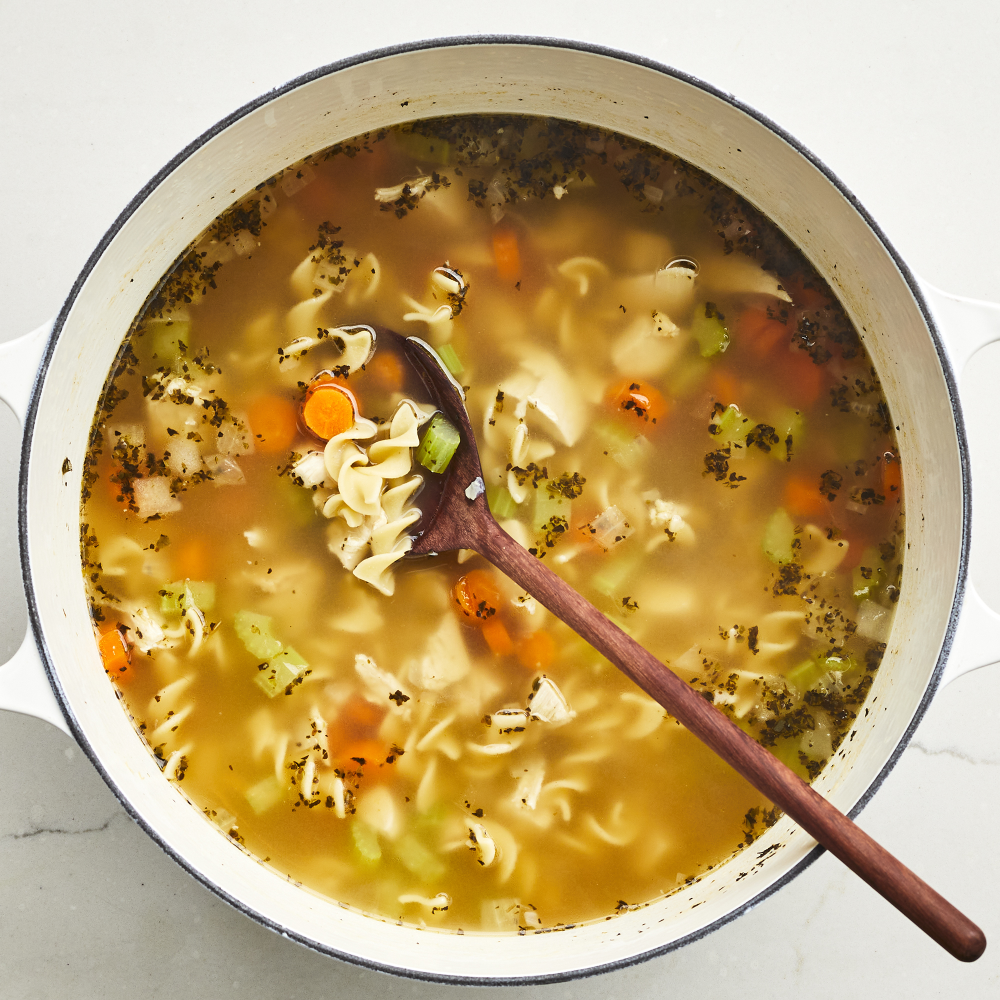

Odin Recipes
Chicken Noodle Soup

Description
A chicken noodle soup recipe that's a very easy, very good substitute for when you don't have time to make your soup totally from scratch.
Ingredients
- 1 tablespoon butter
- ½ cup chopped onion
- ½ cup chopped celery
- 4 (14.5 ounce) cans chicken broth
- 1 (14.5 ounce) can vegetable broth
- ½ pound chopped cooked chicken breast
- 1 ½ cups egg noodles
- 1 cup sliced carrots
- ½ teaspoon dried basil
- ½ teaspoon dried oregano
- salt and ground black pepper to taste
Steps
- Melt butter in a large pot over medium heat. Add onion and celery and cook until just tender, about 5 minutes.
- Add chicken broth, vegetable broth, chicken, egg noodles, carrots, basil, oregano, salt, and pepper. Stir to combine and bring to a boil.
- Reduce heat and simmer for 20 minutes.